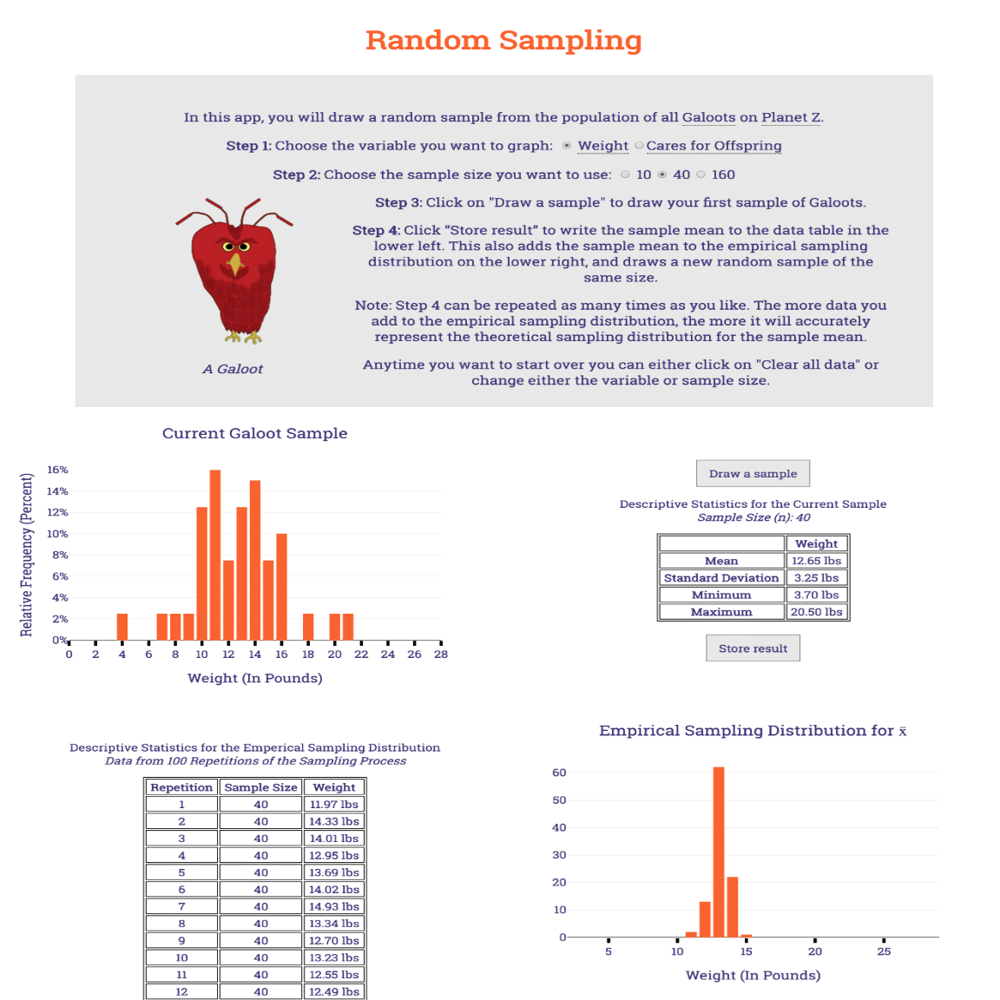
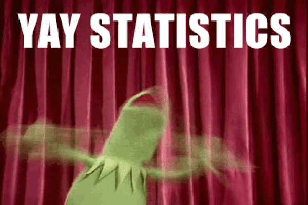

Many students tend to have a difficult time understanding and getting excited about the power of statistics, particularly when it comes to the fundamental concepts in statistics like sampling theory and the impact of bias. This research is to see if using an interactive statistics learning environment will help students engage with the content, explore complex statistical concepts, and better understand statistics as a whole.
The suite, which was developed first with Shiny R and then with JavaScript and HTML is a diverse set of apps that offer:
- Dynamic quizzes on concepts so students can practice for as long as they want
- Reports on trending errors so students will know where to study more
- Interactive statistical investigations based on established studies

Date: March 2016 - Current